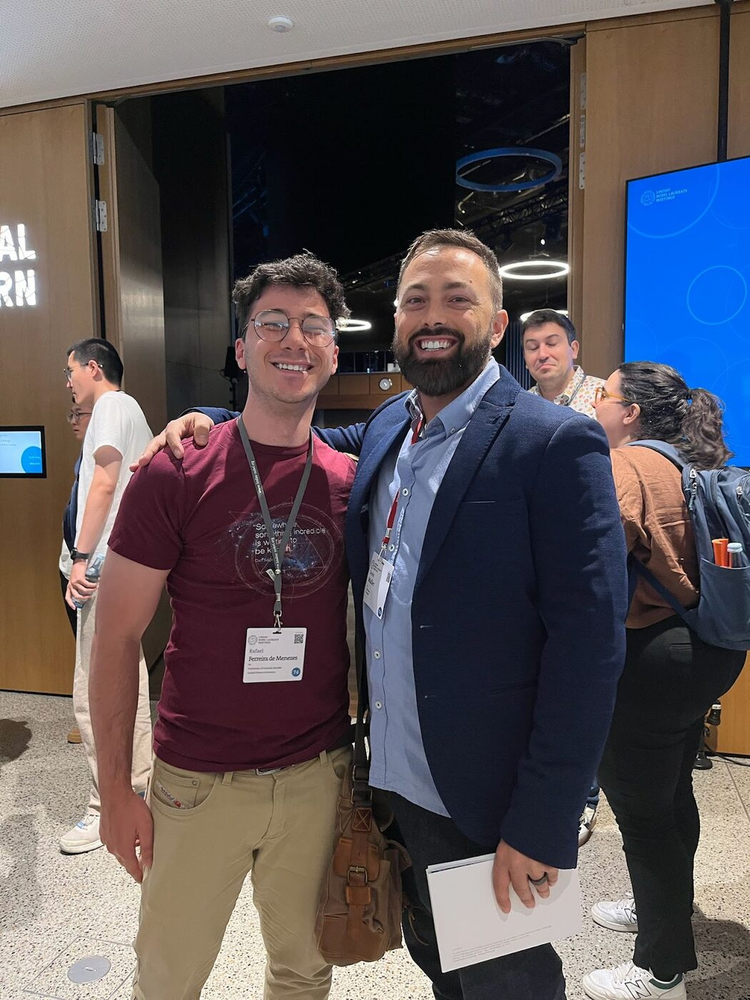
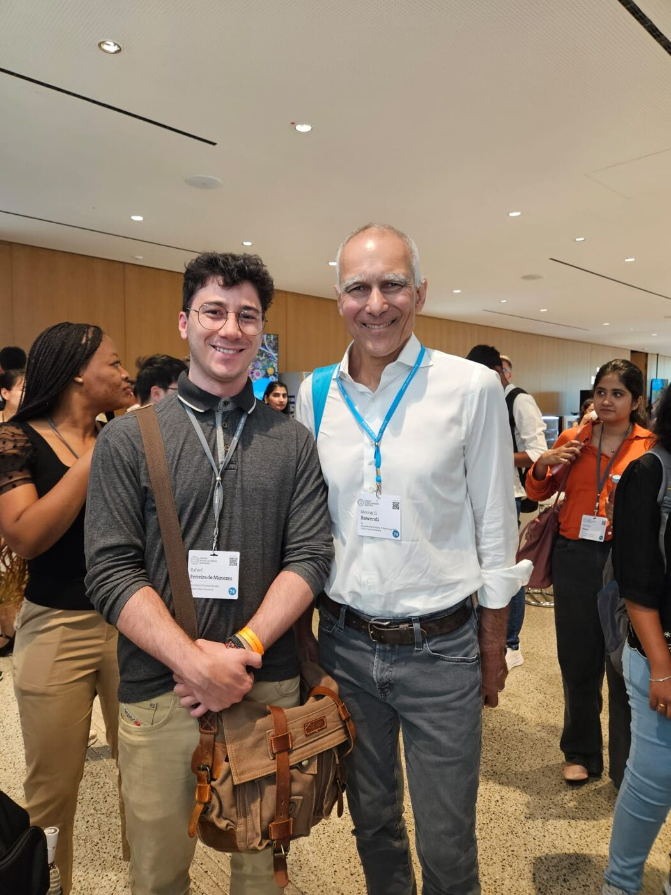
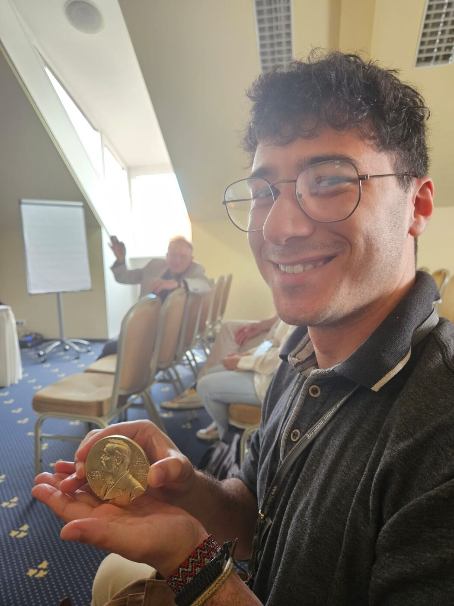
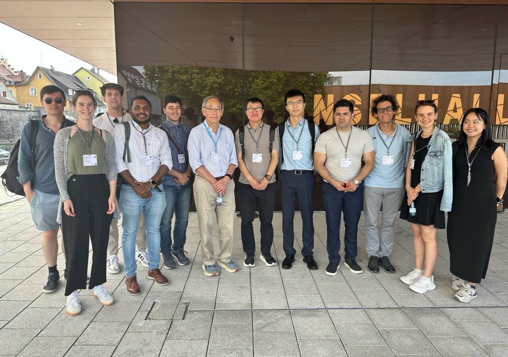
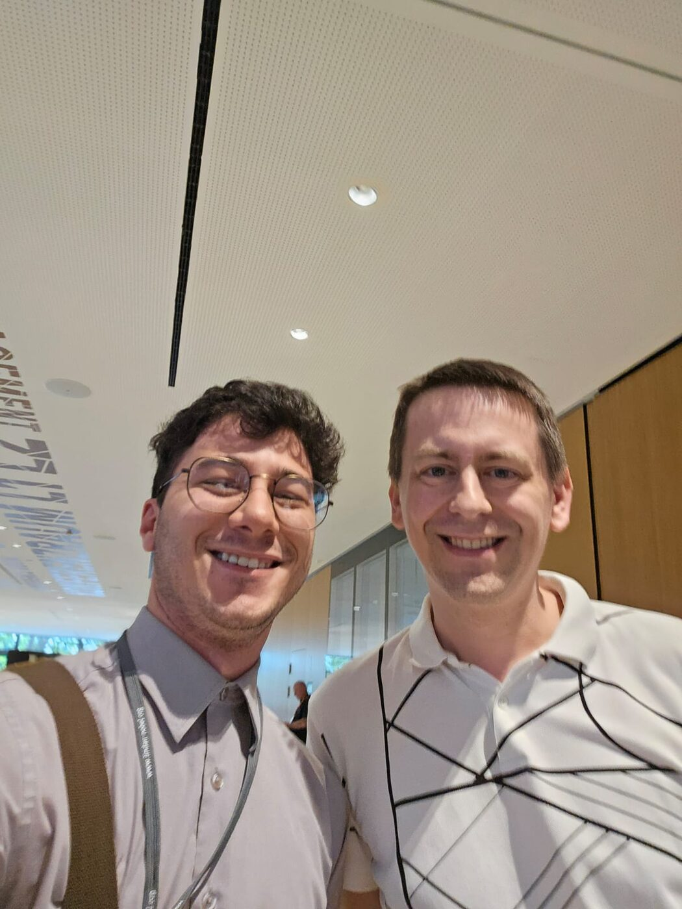

I was nominated by the U.S. National Academy of Sciences to attend the 2025 Lindau meeting, a week with young scientists from more than 40 countries and a few dozen Nobel laureates. Some moments that stayed with me:

Derek Muller (Veritasium)
His videos played a big role in getting me into science, not just for the equations but for the stories and history behind them. Watching him moderate a panel on AI in chemistry, and then getting to talk with him, was a highlight of the week.

Moungi Bawendi
In 2021 my undergraduate thesis was on graphene quantum dots as gas sensors. Four years later I got to discuss the future of quantum dots with the person who received the Nobel Prize for them.

Klaus von Klitzing
I first learned about the quantum Hall effect as a physics undergraduate. Hearing from its discoverer how it redefined our fundamental units, and then holding his Nobel medal, was a moment I will not forget.

Steven Chu
From the Nobel Prize in Physics to U.S. Secretary of Energy. He spoke about embracing interdisciplinary work to tackle big problems, and admitted that even laureates open Khan Academy when learning something new.

John Jumper
AlphaFold is changing how proteins are discovered. What I liked most was hearing that his favorite part of the job is still writing code.